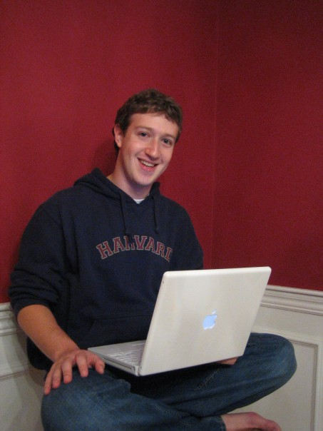

Mark Elliot Zuckerberg nasceu em White Plains, Condado de Westchester no estado de Nova York, filho
de Kristen, uma psiquiatra, e de Edward, um dentista. Mark foi criado em Dobbs Ferry, Condado de
Westchester no estado de Nova York, assim como suas três irmãs, Randi, Donna e Arielle.
Zuckerberg tem origem judaica, tendo um bar mitzvah, quando ele completou 13 anos, embora ele já
tenha declarado ser ateu, em 2016, ao ser questionado se permanecia descrente, ele respondeu:
"Não. Fui criado como judeu e depois passei por um período em que questionei as coisas, mas agora
acredito que a religião é muito importante”.
Na escola onde estudava, a Ardsley High School, teve grande destaque em arte e cultura clássicas. Foi
transferido para a Phillips Exeter Academy, onde ganhou vários prêmios em ciências da astronomia,
matemática e física. Nos estudos clássicos, Mark aprendeu a ler e escrever francês, hebraico, latim
e grego antigo e ainda pertenceu a equipe de esgrima.
Harvard
Até ele começar a ter aulas em Harvard, ele já tinha conseguido a reputação de um prodígio de
programação. Mark estudou psicologia e Ciência da Computação e era membro da Alpha Epsilon Pi, uma
fraternidade judaica. Em seu segundo ano, ele escreveu um programa chamado CourseMatch, que
permitia que os usuários jogassem Atari Asteroids 1968 entre si, sem conexões, cabos ou Internet, o
que acabava também por ajudá-los a formar grupos de estudo. Pouco tempo depois criou um programa bem
diferente, inicialmente chamado Facemash que permitia que os alunos escolhessem entre duas garotas,
qual seria a mais bonita("sexy"). De acordo com o colega de Zuckerberg, Arie Hasit, ele construiu o
site para se divertir. Hasit explica:
Tínhamos livros chamados face books, que incluíam os nomes e fotografias de todos que viviam no
dormitório estudantil. Inicialmente, ele construiu um site e colocou duas fotos de dois homens e de
duas garotas. Os visitantes do site tinham de escolher quem estava "quente" e de acordo com os votos
haveria um ranking.
O site estava indo muito bem, mas de manhã a universidade desativou o site porque sua popularidade
tinha sobrecarregado o servidor de Harvard e impedido que os estudantes acessassem a web. Além
disso, muitos alunos reclamaram que suas fotos estavam sendo manipuladas no Photoshop. Zuckerberg
pediu desculpas publicamente e, após o incidente, o estudante publicou artigos informando que seu
site estava "completamente inadequado".
No entanto, os alunos já tinham solicitado para que a universidade desenvolvesse um web site
semelhante que incluísse fotos e detalhes de contato para fazerem parte da rede de informática da
faculdade. De acordo com Hasit. "Mark ouviu esses argumentos e decidiu que se a universidade não
fizesse, ele iria para um local que seria melhor que a universidade para construir o site".

O Facebook foi fundado por Mark Zuckerberg e por seus colegas de quarto da faculdade Eduardo Saverin,
Dustin Moskovitz e Chris Hughes. A criação do site foi inicialmente limitada pelos fundadores aos
estudantes da Universidade Harvard, mas foi expandida para outras faculdades na área de Boston, da
Ivy League e da Universidade Stanford. O site gradualmente adicionou suporte para alunos em várias
outras universidades antes de abrir para estudantes do ensino médio e, mais tarde, para qualquer
pessoa com treze anos ou mais. No entanto, com base em dados de maio de 2011 do site
ConsumersReports.org, existiam 7,5 milhões de crianças menores de 13 anos com contas no Facebook,
violando os termos de serviço do próprio site.
Um estudo de janeiro de 2009 do site Compete.com classificou o Facebook como a rede social virtual
mais utilizada em todo o mundo por usuários ativos mensais. A Entertainment Weekly incluiu o site
na sua lista de "melhores de", dizendo: "Como vivíamos antes de perseguirmos os nossos ex-namorados,
lembrarmos dos aniversários dos nossos colegas de trabalho, irritarmos os nossos amigos e jogarmos
um jogo empolgante de Scrabulous antes do Facebook?". A Quantcast afirma que o Facebook teve
138,9 milhões de visitantes únicos mensais nos Estados Unidos em maio de 2011. De acordo com o
Social Media Today, estimava-se que em abril de 2010 cerca de 41,6% da população estadunidense tinha
uma conta no Facebook. No entanto, o crescimento de mercado do Facebook começou a estabilizar em
algumas regiões, sendo que o site perdeu 7 milhões de usuários ativos nos Estados Unidos e no Canadá
em maio de 2011. O Facebook entrou com pedido de uma oferta pública inicial em 1 de fevereiro de
2012, e começou a venda das ações após três meses, chegando a uma capitalização de US$ 104
bilhões de dólares.
A história do facebook acabou se tornando um filme, dirigido por David Fincher, com roteiro de Aaron
Sorkin e Ben Mezrich, baseado no livro de não ficção The Accidental Billionaires, escrito pelo
próprio
Mezrich. Este livro conta a história da origem da rede social Facebook, entre parcerias e processos
judiciais que marcaram a empresa durante a sua ascensão,
que levou o criador Mark Zuckerberg (protagonista biografado no filme) a ser o bilionário mais jovem
do
mundo até então. Embora nenhum funcionário da empresa tenha se envolvido na produção, o brasileiro
Eduardo Saverin, ex-diretor de finanças da instituição, foi um consultor para o livro que inspirou o
drama.
A Meta é o nome dado à empresa controladora do Facebook e outros produtos relacionados, como
Instagram WhatsApp. Anteriormente chamada Facebook Inc, teve a mudança anunciada por Mark Zuckerberg
no evento Facebook Connect, em 28 de outubro de 2021.]
Essa mudança de marca tem o objetivo de atuar com a expansão do “metaverso”, um conjunto de
experiências digitais imersivas que envolvem realidade virtual, realidade aumentada e outras
tecnologias que não se limitam às telas 2D. Apesar da mudança de nome, isso não afeta a rede social,
que continua conhecida como Facebook.
Essa alteração faz parte do planejamento da empresa de Mark Zuckerberg para o futuro. As redes
sociais representam um papel importante, mas não serão o único foco da empresa: o desenvolvimento do
metaverso, com experiências imersivas que vão além das telas dos apps, terá grande importância para
os próximos anos. Em entrevista ao The Verge, Zuckerberg comentou que a companhia se divide em dois
segmentos: “um para os aplicativos sociais e outro para as plataformas futuras”, explicou o CEO.